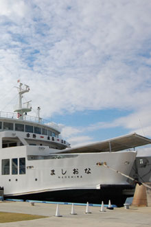
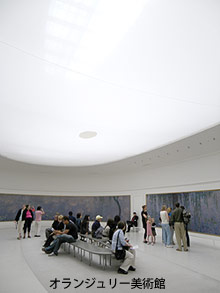
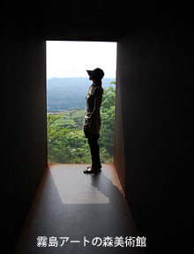

直島観光
BLOG
LINK
犬島観光
直島もろもろ
Iラブ湯
家プロジェクト
地中美術館K
ベネッセハウス
ＬＩＮＫ
直島/犬島の情報リンク

≫ベネッセハウス
≫地中美術館
≫素顔の直島
≫犬島アートプロジェクト
≫うぃ・らぶ・なおしま
≫カフェまるや
≫週刊ダイヤモンド・新憂国呆談
≫タレルインタビュー・ICCコレクションインタビュー
モネの睡蓮がある日本国内の美術館

≫大原美術館
≫北九州市立美術館
≫アサヒビール大山崎山荘美術館
≫国立西洋美術館
≫川村記念美術館
≫オランジュリー美術館（フランス・パリ）
タレルの作品がある日本国内の美術館・情報

≫霧島アートの森
≫熊本市立現代美術館「光の天蓋」
≫光の館
≫金沢21世紀美術館
≫Flicker James Turrell
このページの上に戻る▲